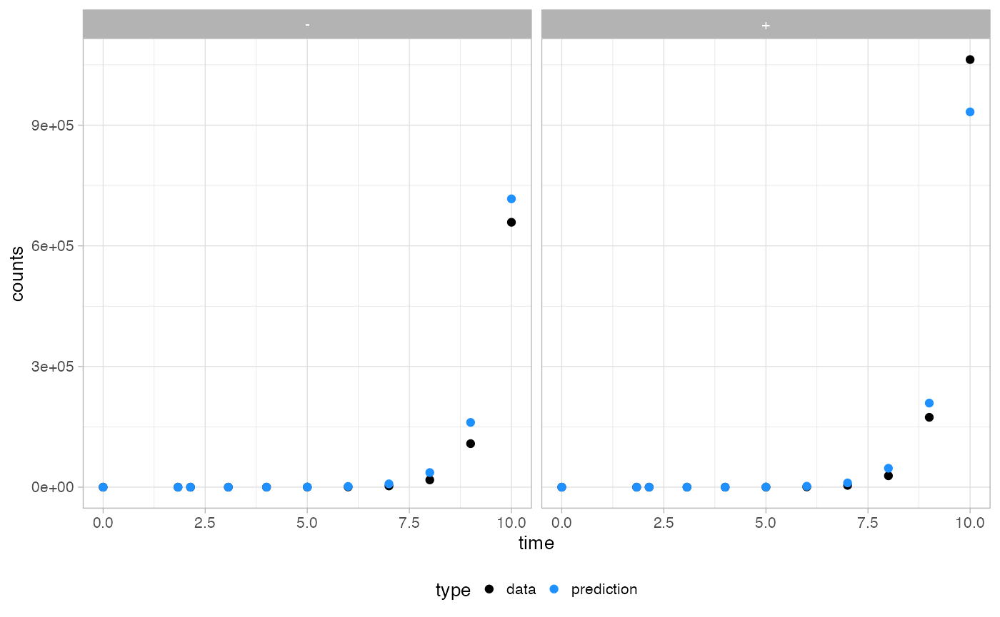

library(PEPI)
library(cmdstanr)
#> This is cmdstanr version 0.4.0.9001
#> - CmdStanR documentation and vignettes: mc-stan.org/cmdstanr
#> - Use set_cmdstan_path() to set the path to CmdStan
#> - Use install_cmdstan() to install CmdStan
library(rstan)
#> Loading required package: StanHeaders
#>
#> rstan version 2.32.3 (Stan version 2.26.1)
#> For execution on a local, multicore CPU with excess RAM we recommend calling
#> options(mc.cores = parallel::detectCores()).
#> To avoid recompilation of unchanged Stan programs, we recommend calling
#> rstan_options(auto_write = TRUE)
#> For within-chain threading using `reduce_sum()` or `map_rect()` Stan functions,
#> change `threads_per_chain` option:
#> rstan_options(threads_per_chain = 1)
library(dplyr)
#>
#> Attaching package: 'dplyr'
#> The following objects are masked from 'package:stats':
#>
#> filter, lag
#> The following objects are masked from 'package:base':
#>
#> intersect, setdiff, setequal, union
library(ggplot2)We load a time series of cell counts generated with rRACES
data("counts")
counts
#> # A tibble: 22 × 4
#> genotype epistate counts time
#> <chr> <chr> <int> <dbl>
#> 1 A - 1 0
#> 2 A + 0 0
#> 3 A - 2 1.83
#> 4 A + 0 1.83
#> 5 A - 3 2.14
#> 6 A + 0 2.14
#> 7 A - 8 3.07
#> 8 A + 1 3.07
#> 9 A - 32 4.00
#> 10 A + 8 4.00
#> # ℹ 12 more rowsWe create a PEPI object of counts type
x = init_counts(counts)
x
#> $counts
#> # A tibble: 22 × 4
#> genotype epistate counts time
#> <chr> <chr> <int> <dbl>
#> 1 A - 1 0
#> 2 A + 0 0
#> 3 A - 2 1.83
#> 4 A + 0 1.83
#> 5 A - 3 2.14
#> 6 A + 0 2.14
#> 7 A - 8 3.07
#> 8 A + 1 3.07
#> 9 A - 32 4.00
#> 10 A + 8 4.00
#> # ℹ 12 more rows
#>
#> attr(,"class")
#> [1] "PEPI_Counts"We fit cell counts
x = fit_counts(
x,
path_to_model = "models",
cmdstan_path = "/opt/anaconda3/envs/stan/bin/cmdstan/",
ndraws = 1000,
init = list(
list(
lambda_minus = 1,
lambda_plus = 4,
effective_switch_rate_n = 0.7,
effective_switch_rate_p = 0.8
)
),
seed = 215,
alpha_ln = 150,
beta_ln = 100,
alpha_lp = 220,
beta_lp = 100,
alpha_rn = 100,
beta_rn = 200,
alpha_rp = 100,
beta_rp = 200
)
#> Warning in dir.create(path_to_model): 'models' already exists
#> CmdStan path set to: /opt/anaconda3/envs/stan/bin/cmdstan
#> ------------------------------------------------------------
#> EXPERIMENTAL ALGORITHM:
#> This procedure has not been thoroughly tested and may be unstable
#> or buggy. The interface is subject to change.
#> ------------------------------------------------------------
#> Gradient evaluation took 0.002528 seconds
#> 1000 transitions using 10 leapfrog steps per transition would take 25.28 seconds.
#> Adjust your expectations accordingly!
#> Begin eta adaptation.
#> Iteration: 1 / 250 [ 0%] (Adaptation)
#> Iteration: 50 / 250 [ 20%] (Adaptation)
#> Iteration: 100 / 250 [ 40%] (Adaptation)
#> Iteration: 150 / 250 [ 60%] (Adaptation)
#> Iteration: 200 / 250 [ 80%] (Adaptation)
#> Iteration: 250 / 250 [100%] (Adaptation)
#> Success! Found best value [eta = 0.1].
#> Begin stochastic gradient ascent.
#> iter ELBO delta_ELBO_mean delta_ELBO_med notes
#> 100 -16527800.280 1.000 1.000
#> 200 -900.958 9172.345 18343.689
#> 300 -587.648 6115.074 1.000
#> 400 -427.276 4586.399 1.000
#> 500 -362.370 3669.155 0.533
#> 600 -289.904 3057.671 0.533
#> 700 -255.308 2620.880 0.375
#> 800 -231.700 2293.283 0.375
#> 900 -226.828 2038.476 0.250
#> 1000 -226.951 1834.629 0.250
#> 1100 -226.780 1834.529 0.179 MAY BE DIVERGING... INSPECT ELBO
#> 1200 -226.841 0.160 0.136
#> 1300 -227.142 0.107 0.102
#> 1400 -226.536 0.069 0.021
#> 1500 -226.771 0.052 0.003 MEDIAN ELBO CONVERGED
#> Drawing a sample of size 1000 from the approximate posterior...
#> COMPLETED.
#> Finished in 17.8 seconds.
x
#> $counts
#> # A tibble: 22 × 4
#> genotype epistate counts time
#> <chr> <chr> <int> <dbl>
#> 1 A - 1 0
#> 2 A + 0 0
#> 3 A - 2 1.83
#> 4 A + 0 1.83
#> 5 A - 3 2.14
#> 6 A + 0 2.14
#> 7 A - 8 3.07
#> 8 A + 1 3.07
#> 9 A - 32 4.00
#> 10 A + 8 4.00
#> # ℹ 12 more rows
#>
#> $inference
#> $inference$counts
#> variable mean median sd mad q5 q95
#> lp__ -222.63 -221.85 3.86 1.53 -226.58 -220.31
#> lp_approx__ -2.00 -1.65 1.39 1.25 -4.76 -0.40
#> lambda_minus 0.84 0.83 0.05 0.05 0.76 0.93
#> lambda_plus 1.21 1.21 0.07 0.07 1.10 1.34
#> effective_switch_rate_n 0.37 0.37 0.04 0.04 0.31 0.45
#> effective_switch_rate_p 0.39 0.39 0.04 0.04 0.33 0.47
#> theta[1] 0.84 0.83 0.05 0.05 0.76 0.93
#> theta[2] 1.21 1.21 0.07 0.07 1.10 1.34
#> theta[3] 0.48 0.47 0.06 0.06 0.39 0.58
#> theta[4] 0.31 0.31 0.04 0.03 0.26 0.37
#>
#> # showing 10 of 80 rows (change via 'max_rows' argument or 'cmdstanr_max_rows' option)
#>
#>
#> $stan_data
#> $stan_data$counts
#> $stan_data$counts$n_times
#> [1] 10
#>
#> $stan_data$counts$z0
#> [1] 1 0 0 0 0
#>
#> $stan_data$counts$t0
#> [1] 0
#>
#> $stan_data$counts$zminus
#> [1] 2 3 8 32 128 565 3059 18084 108197 658585
#>
#> $stan_data$counts$zplus
#> [1] 0 0 1 8 118 725 4511 28291 173676
#> [10] 1063090
#>
#> $stan_data$counts$t
#> [1] 1.833874 2.139856 3.066580 4.001719 5.001132 6.000397 7.000029
#> [8] 8.000004 9.000002 10.000000
#>
#> $stan_data$counts$alpha_ln
#> [1] 150
#>
#> $stan_data$counts$beta_ln
#> [1] 100
#>
#> $stan_data$counts$alpha_lp
#> [1] 220
#>
#> $stan_data$counts$beta_lp
#> [1] 100
#>
#> $stan_data$counts$alpha_rn
#> [1] 100
#>
#> $stan_data$counts$beta_rn
#> [1] 200
#>
#> $stan_data$counts$alpha_rp
#> [1] 100
#>
#> $stan_data$counts$beta_rp
#> [1] 200
#>
#>
#>
#> attr(,"class")
#> [1] "PEPI_Counts"We get and plot average counts
x = get_average_counts(x)
#> No id variables; using all as measure variables
#> No id variables; using all as measure variables
plot_counts(x)
We plot the posterior of growth rates and effective switching rates
x = get_posterior(x)
plot_inference(x,params = c("lambda_minus","lambda_plus","effective_switch_rate_n","effective_switch_rate_p"))
#> Using class as id variables
#> Using class as id variables
#> Using class as id variables
#> Using class as id variables
#> Using class as id variables
#> Using class as id variables